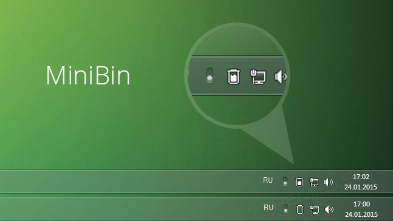

MiniBin - небольшая утилита, которая дополнит Вашу панель уведомлений (системный трей)
иконкой Корзины. MiniBin позволит видеть наполненность Корзины, открывать ее и очищать, не
перемещаясь на рабочий стол и не используя классическую "мусорку", что делает работу с
компьютером более комфортной. Программа имеет несколько иконок заполненности Корзины,
которые можно заменить на свои при желании. При наведении указателя мышки на Корзину
появится всплывающее сообщение об общем размере файлов в ней.

Возможности MiniBin :
- Кликнув два раза по иконке корзины в системном трее её можно полностью очистить.
- В случае такой необходимости есть возможность настроить то что будет происходит по
двойному
клику на иконку, например, корзина может не очищаться (установлено по
умолчанию), а просто
открываться.
- Можно изменять иконки используемые для отображения корзины в системном трее.
- Пользователь может включать и отключать индикацию заполнения корзины, звук и
некоторые
другие параметры.
Операционные системы:
- Windows 7, 8.1, 10 (32/64-bit)